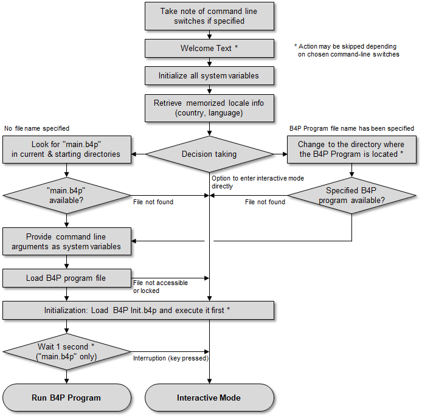

Introduction
The B4P run-time machine undertakes a few steps before the specified B4P is started up. The flow chart shown below illustrates this.
Start-up begins with a common initialzation procedure, beginnign with identifying command line switches if they are provided, and then
show a welcome-text (if not disabled with -q or -w), initialize all system variables and retrieve the locale settings from B4P Locale Settings.json
located in the application data directory. The locale settings has originally been selected during installation, and the function set locale()
is available to change tem without new installation.
A decision point follows the initial sequence which does either branch right to load a specified B4P Program file, or to the left if no such file has been
specified, or straight down to enter interactive mode, e.g. with the command line switch -i. On the left-hand path, B4P looks for 'main.b4p' in the
current directory and then in the memmorized starting directory. On the right-and path, B4P opens the specified program file.
In all three cases, unless if the command line switch -w is applied, the B4P Init.b4p initialization program in the library directory will be called to
carry out some initial preparations which include:
- "Utility Library": A collection of supplementary B4P functions
- "Zip Library": File compression and decompression
- "Office Library": Ability to access Microsoft office meta data and load Excel files
- "Support Library": Comprehensive help and support features
The intialization prgraom B4P Init.b4p will also call the user initialization program My B4P Init.b4p, a user customizable initialization program twice (before and after including
the library files), as long the file is available in the user application directory. For more details, see the section on user initialization program
Once this has happend, then the laoded B4P program will be started or interactive mode is activated, depending on the parameters provided.
